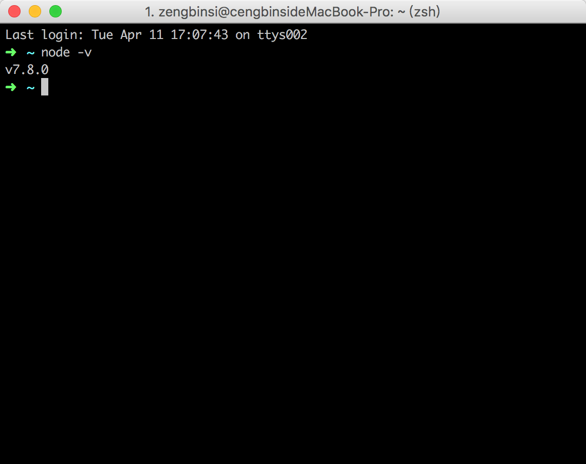
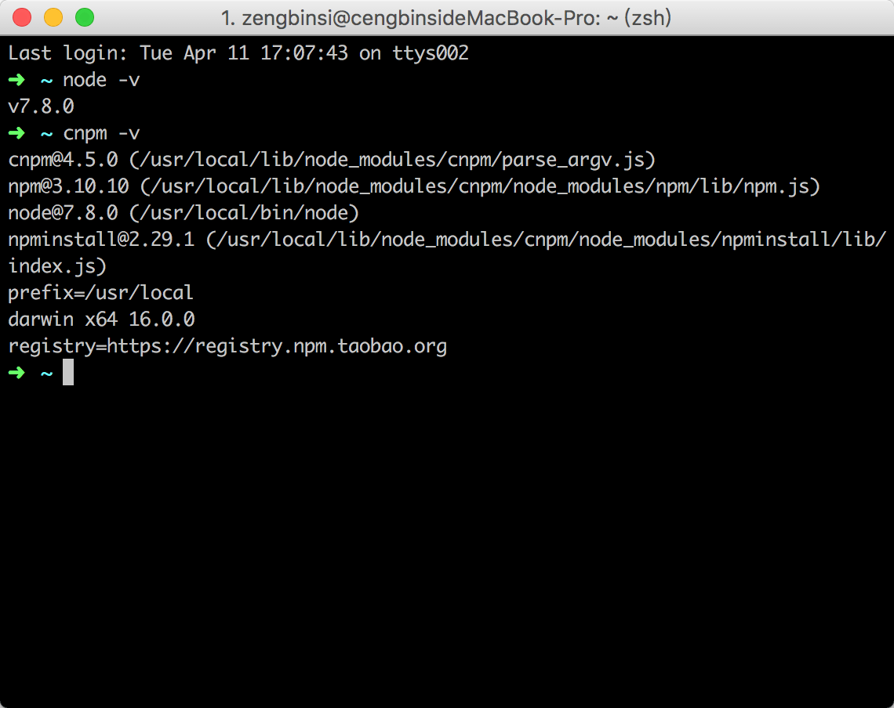
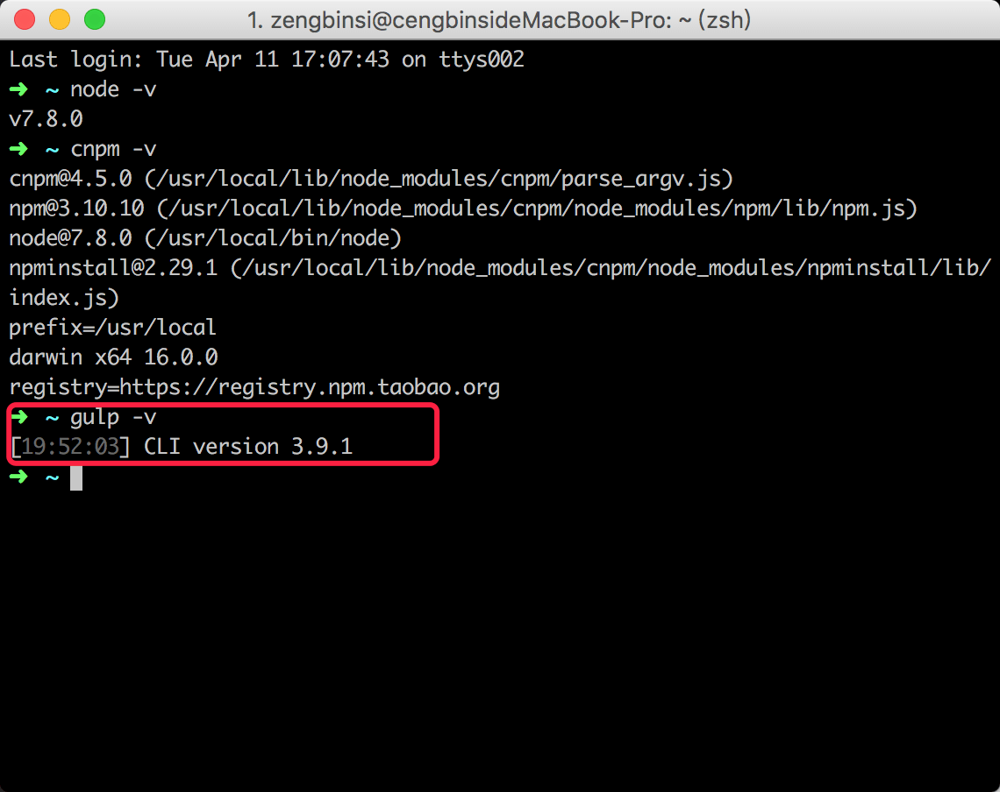
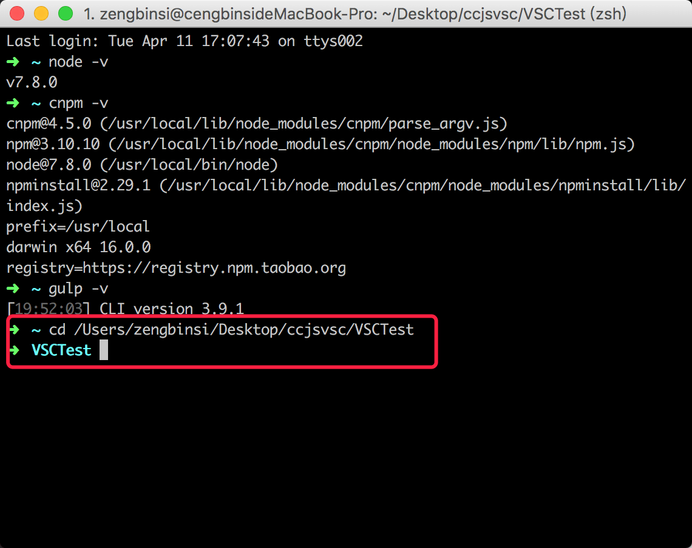
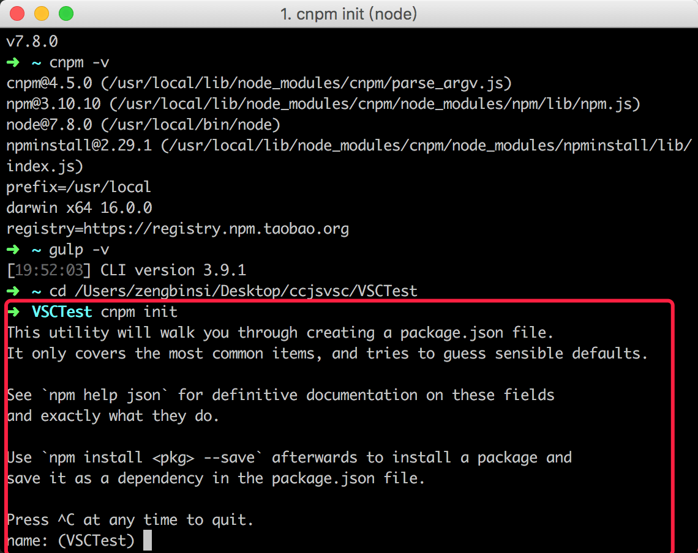
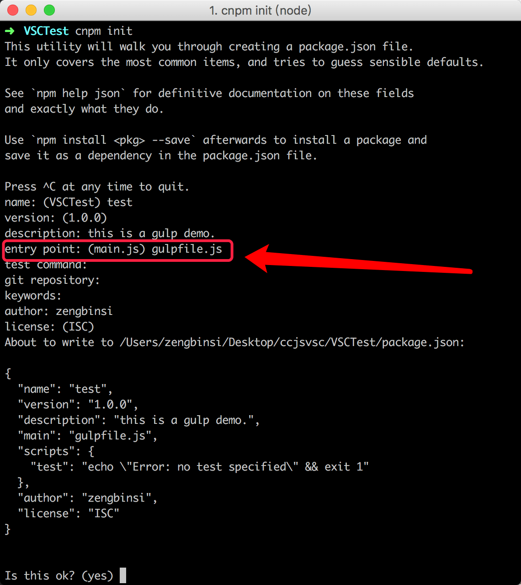
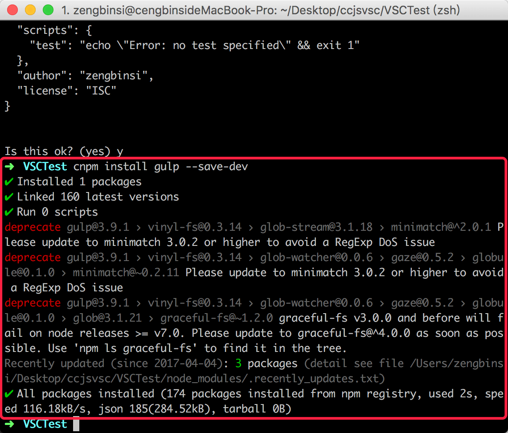
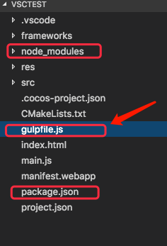
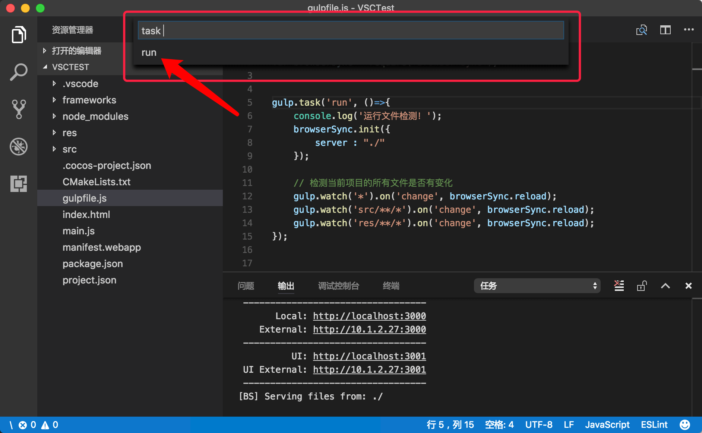
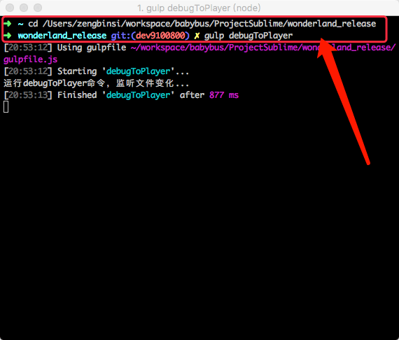

搭建gulp的运行环境需要用到npm，所以我们需要先安装node.JS。
【下载地址】：
【Node.JS官网】：https://nodejs.org/en/
【node.JS中文网】：http://nodejs.cn/download/
进入下载页面，找到系统对应的版本进行下载即可。
安装结束后，打开终端控制台，输入：
node -v
然后回车，控制台上回显示node的版本信息，如果没有显示，可以注销用户，或者重启计算机试试。
由于npm安装插件是从http://registry.npmjs.org下载对应的插件包（该网站服务器位于国外，所以经常下载缓慢或出现异常）。所以咱们乐于助人的淘宝团队在国内搭建了一个国内服务器，实现了cnpm。
服务器地址是：http://npm.taobao.org
这是一个完整 npmjs.org 镜像，你可以用此代替官方版本(只读)，同步频率目前为 10分钟 一次以保证尽量与官方服务同步。
配置cnpm的方式也很简单，在终端控制台输入：
npm install cnpm -g --registry=https://registry.npm.taobao.org安装完成后，最好关闭终端控制台，然后重新打开使用。直接使用可能会引发错误。
cnpm跟npm用法完全一致，只是在执行命令时将npm改为cnpm
使用“cnpm -v”可以查看cnpm的版本：
cnpm -v
为了能够在计算机上让gulp直行任务，所以我们需要全局安装gulp。在终端执行：
cnpm install gulp -g安装完成后，我们可以同样通过命令查看是否安装成功：
gulp -v由于我计算机上已经安装好了环境，这里就不截图演示了。

我使用gulp注意是为了在Cocos2d-JS游戏开发过程中避免频繁的切换浏览器刷新，所以以下都是通过该项目进行描述。
首先，在控制台cd到指定项目的根目录：

然后输入：
cnpm init
终端停止在上图所示的位置，这时候需要手动输入项目名称，如果直接回车，项目名称将会默认设置为光标前面那个括号里面的内容。

其实没有什么特殊的，我都是直接回车使用默认。 在“entry point: (main.js)”这一项的时候，我将名称改为“gulpfile.js”。主要是因为通常的JS项目一般都会包含“main.js”文件，为了区分开，所以这里使用了自定义的名称。
当光标停止在“Is this ok?(yes)”后面时，输入“y”回车即可。
完成以上步骤，在项目的根目录就自动生成了一个文件，内容大概如下所示（根据个人配置会有一定的出入）：
{
"name": "test", // 项目名称（必须）
"version": "1.0.0", // 项目版本（必须）
"description": "this is a gulp demo.", // 项目描述（必须）
"main": "gulpfile.js", // 项目主文件
"repository": { //项目资源库
"type": "git",
"url": "http://10.1.0.103:3000/2d/com.sinyee.babybus.wonderland"
},
"scripts": {
"test": "echo \"Error: no test specified\" && exit 1"
},
"author": { //项目作者信息
"name": "zengbinsi",
"email": "zengbinsi@hotmail.com"
},
"license": "ISC", //项目许可协议
"devDependencies": { //项目依赖的插件
"gulp": "^3.9.1"
}
}为了能正常使用，需要在项目下再次安装gulp。首先，确保终端控制台的工作空间在项目的根目录，然后执行：
cnpm install gulp --save-dev
安装完成后，会在项目的根目录生成一个“node_modules”的文件夹，所有通过npm（cnpm）本地化安装的模块文件都会在这个文件夹里面。
在项目的根目录新建一个“gulpfile.js”文件，文件名主要是根据pacakge.json里面配置的名称来定的，只有保证两边一致即可。

在gulpfile.js中编辑一下代码：
var gulp = require('gulp');
var browserSync = require('browser-sync');
// 定义一个名为run的任务
gulp.task('run', ()=>{
console.log('运行文件检测！');
browserSync.init({
server : "./"
});
// 检测当前项目的所有文件是否有变化
gulp.watch('*').on('change', browserSync.reload);
gulp.watch('src/**/*').on('change', browserSync.reload);
gulp.watch('res/**/*').on('change', browserSync.reload);
});由于刷新浏览器需要用到“browserSync”，所以我们一起讲其require进来。
运行gulp任务的方法有好多种，我开发Cocos2d-JS是使用VSCode进行代码编辑的，在VSCode上，通过Command + P可以显示一个输入框，在输入框中输入“task ”后面跟一个空格，输入框下面的面板就会显示当前项目所有的gulp任务。选择对应的任务即可，当任务启动后，被gulp.watch()监听的目录文件内容发生变化时，浏览器就会进行一次刷新。所有每当写好一句代码，按下保存的时候，浏览器就会自动重新运行项目（需要两个屏幕进行开发，这样才够爽-_-）。

在公司，开发是使用Quick-Cocos2d-X的，游戏效果也都是在quick-x-player上查看，这时候我的gulp是在终端控制台启动的。命令如下：
gulp 任务名称 但是在执行命令的时候，确保终端控制台的工作空间在项目的根目录。

我终端执行的那个gulpfile.js文件内容如下（仅供参考）：
let gulp = require('gulp');
let playerPro = null;
// 重启模拟器
function restartPlayer() {
console.log('文件内容变更，重启游戏...');
// 要打开的项目目录
let workdir = '/Users/zengbinsi/workspace/babybus/ProjectSublime/wonderland_release',
// 要打开的项目文件
file = 'scripts/main.lua',
// 模拟器位置
quickApp = '/Users/zengbinsi/workspace/babybus/ProjectSublime/main/bin/mac/app/quick-x-player.app/Contents/MacOS/quick-x-player';
// 打开模拟器命令
let cmd = quickApp + ' -workdir ' + workdir + ' -file ' + file + ' -offset {1000, 0} -scale 1 -size 960x540 -console -write-debug-log';
let exec = require('child_process').exec;
let spawn = require('child_process').spawn;
// 根据进程句柄关闭模拟器
if (playerPro !== null) {
playerPro.kill();
playerPro = null;
}
// 重新打开模拟器, 返回一个进程句柄
playerPro = exec(cmd, function (err, stdout, stderr) {
if (err) {
// 如果有引发一场，关闭进程
if (playerPro !== null) {
playerPro.kill();
playerPro = null;
}
}
});
}
// 定义任务
gulp.task('debugToPlayer', () => {
console.log('运行debugToPlayer命令，监听文件变化...');
// 检测当前项目的所有文件是否有变化
// gulp.watch('*').on('change', restartPlayer);
gulp.watch('scripts/**/*').on('change', restartPlayer);
gulp.watch('res/**/*').on('change', restartPlayer);
});这时候，一旦项目文件内容被更改，模拟器就会进行一次刷新。